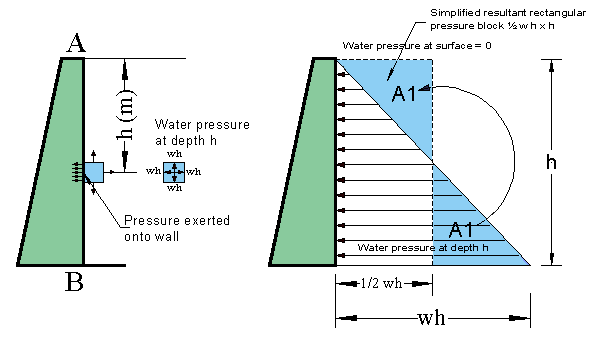
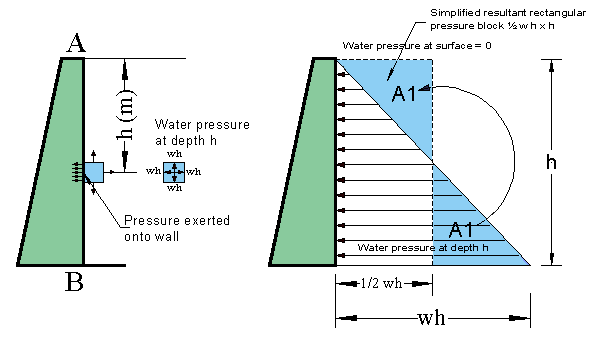
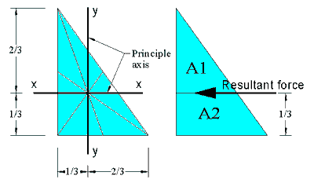
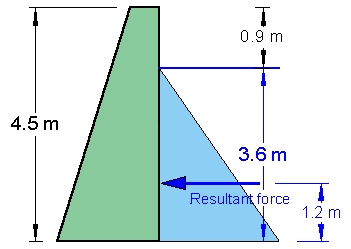
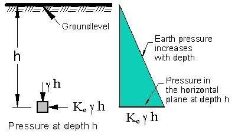
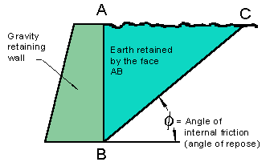
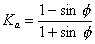
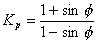
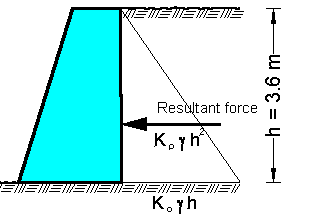
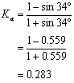

Retaining structures
Pressure on retaining structures
Liquid pressure
From diving experience we know that the pressure in a liquid (e.g. water) becomes greater the deeper we dive. Consider the vertical surface A-B of the wall in Figure 1. The cube situated at depth h exerts a pressure of w × h (kN) on all its surfaces. If one face of the cube is touching the wall it will exert a pressure onto the wall.
The density of water, w
= 1000 kg/m³ = 1Mg/m³
The weight of 1000 kg mass is 1000 × 9.81 = 9810 N (weight = mass
× gravitational acceleration). Hence the unit weight of water,  w
9.81 kN/m³. Instead of using the exact figure for the gravitational
acceleration we approximate this figure to 10 m/s². This provides
a safety margin of approximately of 2% and on the other hand it suits
the decimal system and eases the calculations. w is the equivalent
density of water which in our case, will always be 10 kN/m³. In the
right diagram of Figure 1 the pressure at the surface is zero and at depth
h is w × h. The average pressure of the 'wetted area' between
A and B is ½ w × h (in kN per unit area).

w
9.81 kN/m³. Instead of using the exact figure for the gravitational
acceleration we approximate this figure to 10 m/s². This provides
a safety margin of approximately of 2% and on the other hand it suits
the decimal system and eases the calculations. w is the equivalent
density of water which in our case, will always be 10 kN/m³. In the
right diagram of Figure 1 the pressure at the surface is zero and at depth
h is w × h. The average pressure of the 'wetted area' between
A and B is ½ w × h (in kN per unit area).

Figure 1
Position of the resulting forceThe opposite diagram shows the
centre of gravity of a triangle in relation to the principle axis. The centre of gravity
for all triangles is at a 1/3rd from the base. (Any side of the triangle can be the base.) A parallel line from the base at 1/3rd
of the height of the triangle divides the area into two equal parts (A1=A2). Referring to the above example
the resultant force, which equals ½ × w h² (kN) will therefore act at a point
of 1/3rd of height from the base.
Example 1
 A dam retains water on its
vertical surface as shown in Figure 6. The dam has a height of 4.5 metre,
and the water level is 0.9 metre below the top of the dam.
What is the resultant water pressure per metre run of dam?
Solution
The equivalent density w of water equals 10 kN/m³
P = ½ × w × h²
= ½ × 10 × 3.62
.=
64.8 kN
Figure 2
Soil pressure (horizontal)
There is some similarity between the calculation of the lateral pressure in water and soil. However, it is apparent that pressures on vertical surfaces from retained soils cannot be determined with the same accuracy as with water. Soils vary in character and weight and behave quite differently under these varying conditions. There are a number of soil pressure theories for the calculation of soil pressure but only the Rankine's theory will be dealt with.
As the density of soil can vary there will be a number of different unit
weight figures and not only one as for water. Instead of using w
as for the density of water,  will be used for the density of soil (see also properties of soil).
will be used for the density of soil (see also properties of soil).
Figure 3 |
Consider a mass of soil with a horizontal upper surface. If the unit weight of the soil is |
 3.
The ratio between the
3.
The ratio between the Angle of repose
Figure 4 |
Consider, for example,
the soil retained by the vertical face AB in Figure 8. If the wall
(retaining face AB) was removed, then some of the soil would probably collapse.
After the soil has collapsed it would assume a line BC as shown. The angle
|
Active and passive earth pressure
Contemplate a smooth vertical wall supporting a mass of soil at rest
in which the lateral pressure on the wall is = Ko  h. If the wall is allowed to yield, i.e. move forward slightly, there
will be an immediate reduction in the value of lateral stress, but if
the wall is pushed slightly into the soil there will be an increase in
the value of the lateral pressure.
h. If the wall is allowed to yield, i.e. move forward slightly, there
will be an immediate reduction in the value of lateral stress, but if
the wall is pushed slightly into the soil there will be an increase in
the value of the lateral pressure.
The minimum value is known as the active earth pressure
(Ea), and the value equals Ka ×  h where Ka) = the coefficient of active earth pressure.
h where Ka) = the coefficient of active earth pressure.
Rankine's theory states in general terms that the active earth pressure coefficient is:

The active earth pressure at a depth h (m) due to a level fill of soil
is therefore:

The passive earth pressure (Ep), which equals Kp×
h where Kp = the coefficient of passive earth pressure.

Example 2
Figure 5 |
A soil weighing 19 kN/m3 and having
an angle of repose  of 34°, exerts a pressure on a
3.6 metre high vertical face of a wall. of 34°, exerts a pressure on a
3.6 metre high vertical face of a wall.What is the resultant horizontal force per metre run of wall?  Ea = 0.283 × 19 × 3.6 = 19.34 kN/m |

The total horizontal force from the retained earth acting on the wall surface is:
P = 19.34 × ½ 3.6 = 34.84 kN
It is of advantages to calculate the individual components, especially
if you need to know the Ea figure. Compare this result with
the liquid pressure in Example 1. As you can see the force due to hydrostatic
(liquid) pressure is much less than the force due to earth pressure. This
results from the internal friction ( higher in sand than in clay) between the grains of the soil represented
by the Ka figure.
higher in sand than in clay) between the grains of the soil represented
by the Ka figure.